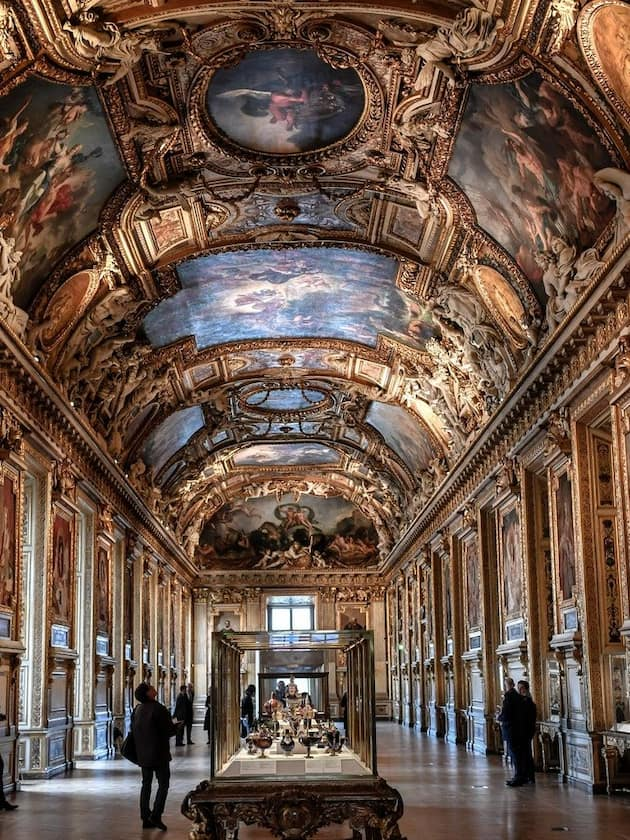
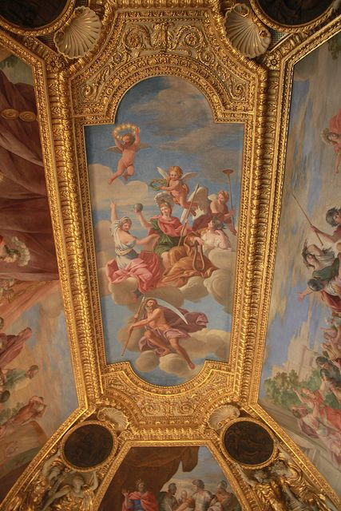

A voir également


Chaque passage dans la capitale mérite une visite du Louvre, tant le plus grand musée de Paris recèle de trésors. Il rassemble des œuvres de l’art occidental du Moyen Âge à 1848, des civilisations antiques orientales, égyptiennes, grecques, étrusques, romaines, des arts graphiques et des arts de l’Islam. De salle en salle, l’ancien palais royal dévoile ses chefs-d’oeuvre : la Joconde, Le Radeau de la Méduse, la Vénus de Milo, La Victoire de Samothrace… Au total, quelque 35 000 œuvres ! En huit siècles d’existence, le Louvre a été marqué par de nombreux courants architecturaux, de la forteresse médiévale du XIIe siècle à la pyramide de verre de Pei (1989). Dernier ajout : les architectes Mario Bellini et Rudy Ricciotti ont signé le nouvel écrin accueillant les Arts de l’Islam, une verrière ondulante recouvrant la cour Visconti et inondant de lumière les 2 800 m² du nouveau département. La visite du musée est particulièrement agréable lors des nocturnes : moins fréquenté, le Louvre offre une atmosphère différente et des vues imprenables sur la Pyramide de Pei, la cour Carrée et la Seine.
Le Louvre est un musée immense et les amateurs d’art pourraient bien passer des journées entières à le visiter. Pour se faire une idée générale du musée et contempler les œuvres incontournables, il est nécessaire d'y consacrer au moins une matinée complète. Si l’art vous intéresse et que vous souhaitez connaître en détails les œuvres du Louvre, le musée met à disposition de ses visiteurs, un audioguide avec commentaires sur chacun des trésors de cette galerie. Vous pourrez la télécharger sur votre portable ou Nintendo 3DS. Bien que le Musée du Louvre possède une renommée mondiale, il est possible que certaines personnes n'appréciant pas particulièrement l’art trouvent que ce lieu immense soit quelque peu ennuyeux et oppressant en raison de l'affluence touristique.
 La collection du Louvre comprend près de 300 000 œuvres réalisées avant 1948, mais seules quelques 35 000 pièces y sont exposées.
L’immense collection est organisée de manière thématique et répartie dans différents départements : antiquités orientales, antiquités
égyptiennes, antiquités grecques, romaines et étrusques, histoire du Louvre et du Louvre médiéval, peinture, sculpture, objets d’art,
arts graphiques et arts de l’Islam.
Parmi les peintures les plus importantes du musée, l’on mentionnera particulièrement :
La Joconde de Leonard de Vinci.
La Liberté guidant le peuple de Delacroix.
Les Noces de Cana de Véronèse.
Parmi les sculptures les plus remarquables :
La Vénus de Milo de la Grèce Antique.
Le Scribe accroupi de l’Égypte Antique.
La Victoire de Samothrace de la Grèce Antique.